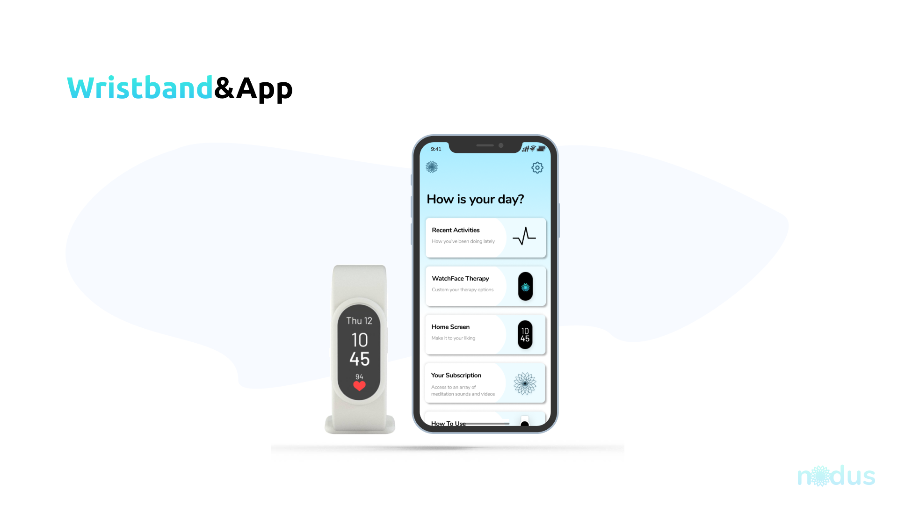

App & Product Design
Nodus App
View PDF SlidesNodus is a wellness wristband which helps PTSD patients to detect triggers and alleviate stress symptoms. The wristband predicts symptoms and offers different grounding methods in response.
The company’s (our team) value proposition is to address an increasing number of PTSD patients who are unable to gain access to immediate response, which can cause psychological when triggers arise. The Nodus Wristband is a product which can positively impact the lives of PTSD patients by detecting symptoms before they escalate, and provide simple, discreet, and personalized grounding methods.
Project
SFU SIAT 481 - Special Topics in Interactive Arts & Technology (Science)
Topic
Neuroscience Media Device
Project Members
Adrian He, Emily Li, Emma Wu & Joyce Tng
Timeline
10 weeks // Fall 2020
Role
Product Design, UX / UI
Brainstorming & StoryBoarding
The inital weeks of this projects was to brainstorm a Neaurotechnology product that assist users. Our team decided to go with the technology of assisting PTSD patients alleviate stress symptoms. The initial idea was to have a headpiece that would automatically start a sound therapy. However, later as we do user interviews, we found that PTSD patients prefer not to stnad out in public and a head piece is not a discreet accessory to wear.
The idea is to have a wristband that can detect irregular of heart rate through day to day life and focus the users attention to the watch or the mobile app. Pulling the users attention away from the stress. Check out the pdf version here.
Research & Interview
After presenting our idea, we now have to go into research and interview. We had to interview in 3 different categories: Business expert, Technology Expert, and an User Expert. For this project I took on resonsiblity to reach out to some user experts. I had reached out to You Are Not Alone PTSD BC founder, Lisa Jennings. She gave us very insightful informations on how she dealt with PTSD and if our product could potentially help. Additionally with permission from a Discord PTSD Community, we were able to send out online questionaries for more interviewee to anonymously answer.
Final Renders


- 
App Prototype
You can get a grasp of how the wristband and app will work together to help PTSD patients be more aware of when their symptoms occur. The App was designed to be simple and discreet. With the simple features, we can ensure and control the interface and not become a stress trigger to our users. The app gives users simple customizations on the look and feel of their wristband and data that is collected from the band. The wristband itself can also provide calming visuals to help the users focus on. The visual animations can also be used as a breathing exercise.